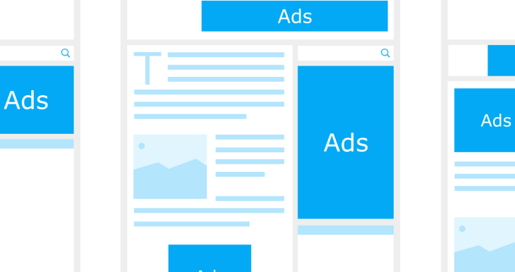

Banner de produtos no WordPress
Que tal incluir um corrossel de imagens que pode ser incluído na barra lateral do seu site, para funcionar como um banner de produtos ou serviços caso você seja produtor ou afiliado digital? Dê uma olhada neste plugin do WordPress.
O banner de produtos

Muitas vezes queremos incluir banner de produtos para divulgar e-books, cursos online ou serviços. Afinal, tanto para afiliados, quanto para os próprios produtores, é importante o uso de imagens, com os links para páginas de vendas, que deem visibilidade à proposta. Assim, neste post vamos mostrar a usar um plugin de carrossel de imagens para divulgação na barra lateral do site.
Instalando e configurando o plugin
Primeiramente, é necessário instalar e ativar o plugin. Para isto, basta buscar pelo termo “MetaSlider” no diretório do WordPress. O plugin MetaSlider, usado neste post, tem uma boa avaliação e sofre atualizações contantes.
Assim que o plugin é instalado e ativado é exibida uma nova opção no menu da área administrativa.
Escolhendo a opção MetaSlider você será direcionada para a tela de configuração onde pode criar um novo slider.
Logo depois é necessário configurar as imagens e os links relacionados com cada uma delas. Se você for afiliado, use os links gerados pelas plataformas, como Hotmart, por exemplo.
Depois que adicionar as imagens ainda é necessário configurar o próprio slider. Definir o tamanho do banner, se a navegação estará disponível e outros detalhes.
Exibindo o banner
Por fim, depois de configurado o slider é necessário exibir no site. Por isso, vamos configurar o widget do MetaSlider na barra lateral do site.
Caso você queira saber mais detalhes sobre este passo a passo, olhe o vídeo abaixo. Ele demonstra o que foi explicado aqui, mostrando o resultado em um site WordPress.
Não deixe de assinar o canal e curtir o vídeo, caso queira mais conteúdos como este.